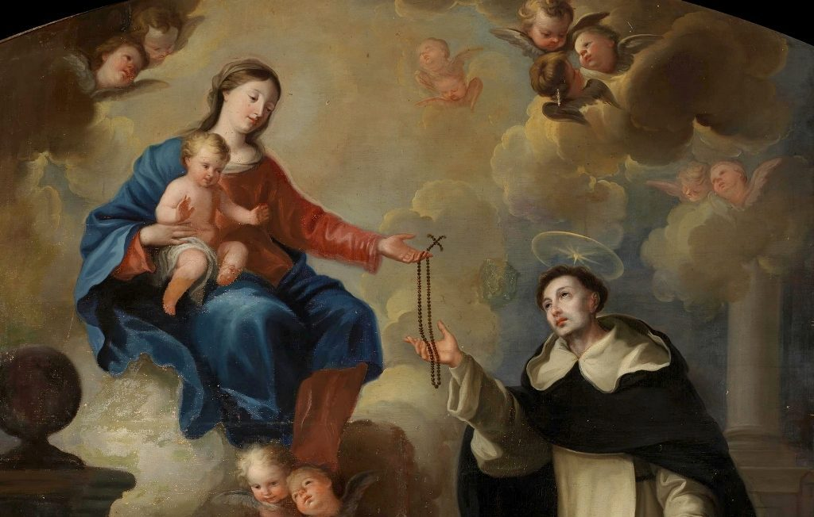
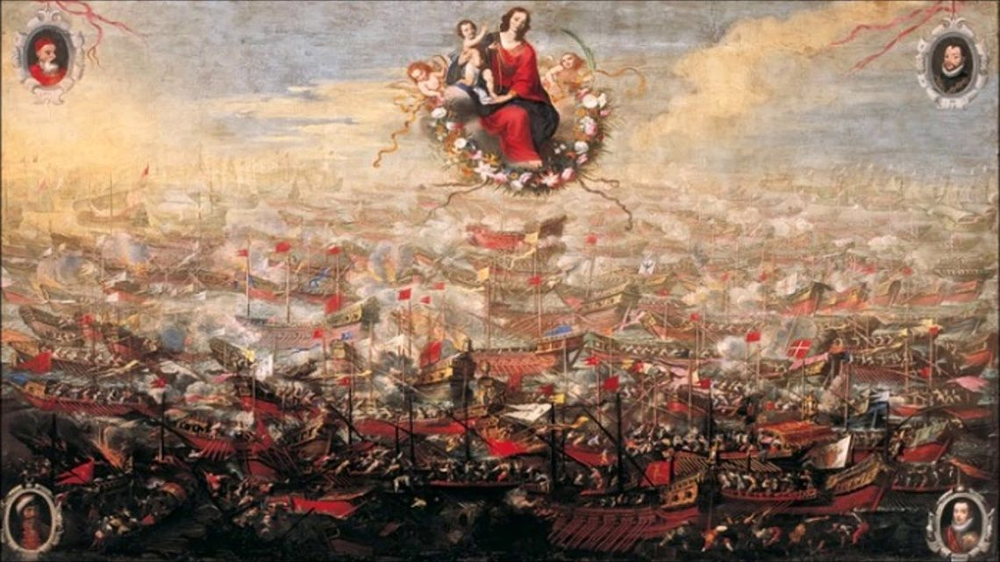
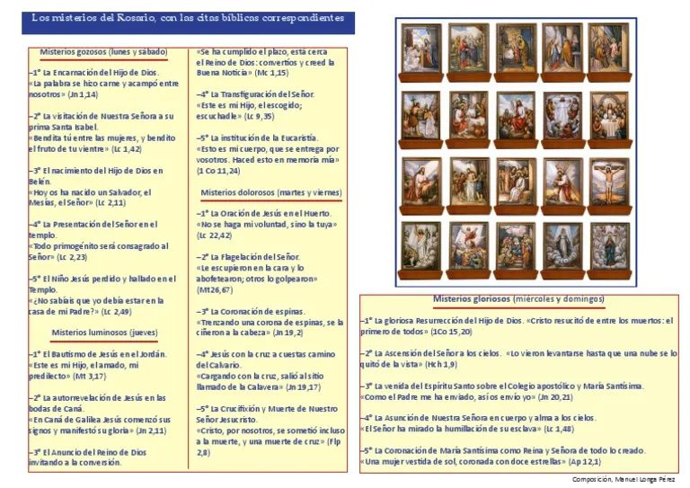
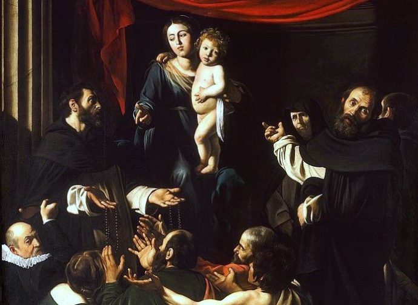

Historia del Rosario como Oración

Los orígenes del Rosario se remontan al siglo XIII, cuando la devoción popular comenzó a estructurar la repetición de las Ave Marías como un modo accesible de participar en la oración litúrgica. La tradición atribuye un papel fundacional a Santo Domingo de Guzmán (1170–1221), fundador de la Orden de Predicadores, quien habría recibido de la Virgen esta forma de oración como arma espiritual contra la herejía albigense en el sur de Francia. Aunque los historiadores debaten el alcance exacto de la intervención de Santo Domingo, es innegable que la Orden Dominicana fue la gran promotora y difusora del Rosario durante los siglos siguientes, convirtiendo esta oración en uno de los pilares de la espiritualidad católica occidental.
La estructura de las 150 Ave Marías no es casual: refleja deliberadamente los 150 Salmos del Salterio bíblico, de modo que el pueblo sencillo pudiera rezar un "salterio mariano" sin necesidad de saber leer el latín litúrgico. Esta democratización de la oración tuvo un impacto enorme en la Edad Media, cuando la mayoría de los fieles no tenía acceso directo a los textos sagrados. A lo largo del siglo XV, la oración fue adquiriendo su organización sistemática en misterios contemplativos: quince estaciones que guían la meditación a través de los episodios centrales de la vida de Cristo y María, agrupados en misterios gozosos, dolorosos y gloriosos.
El beato Alano de la Roca (Alanus de Rupe, 1428–1475) consolidó la teología del Rosario y fundó las primeras Cofradías del Rosario, que se extendieron rápidamente por Europa. Posteriormente, el papa León XIII (1878–1903), llamado "el Papa del Rosario", publicó nada menos que once encíclicas sobre esta devoción, impulsando su práctica en todo el mundo católico y vinculándola de manera explícita a la vida familiar y a la paz social.
La Batalla de Lepanto y el Nacimiento de la Fiesta

El 7 de octubre de 1571 se libró en el golfo de Lepanto, frente a las costas de Grecia, una de las batallas navales más decisivas de la historia occidental. La Santa Liga, coalición formada por las flotas de España, Venecia, Génova y los Estados Pontificios bajo el mando de don Juan de Austria, se enfrentó a la poderosa armada del Imperio Otomano. Las fuerzas cristianas eran numéricamente inferiores y el desenlace parecía incierto. El papa Pío V (canonizado en 1712), dominico profundamente devoto del Rosario, convocó a los fieles de toda Europa a rezarlo como intercesión urgente por la victoria.
La victoria fue aplastante y, para muchos contemporáneos, inexplicable en términos puramente militares: la flota otomana sufrió pérdidas devastadoras y la expansión turca hacia el Mediterráneo occidental quedó frenada durante generaciones. El papa Pío V, que según la tradición vio la victoria en una visión mística antes de que llegaran los mensajeros, instituyó de inmediato una fiesta bajo el nombre de "Nuestra Señora de la Victoria". Su sucesor, Gregorio XIII, la transformó en la "Fiesta del Rosario" fijada el primer domingo de octubre. Finalmente, en 1913, san Pío X la trasladó al 7 de octubre de manera permanente, consolidando para siempre la memoria de Lepanto en el calendario litúrgico universal.
La relación entre el Rosario y Lepanto no es meramente anecdótica: encarna la convicción católica de que la oración contemplativa tiene un poder real sobre los acontecimientos históricos. Esta convicción se renovaría siglos después en las apariciones de Fátima (1917), donde la Virgen pidió insistentemente la oración del Rosario como medio de conversión y paz mundial.
Los Cuatro Grupos de Misterios

Durante siglos, el Rosario se estructuró en quince misterios distribuidos en tres grupos de cinco: los Misterios Gozosos (la Anunciación, la Visitación, el Nacimiento de Jesús, la Presentación en el Templo y el Hallazgo del Niño perdido), los Misterios Dolorosos (la Agonía en el Huerto, la Flagelación, la Coronación de espinas, el Camino del Calvario y la Crucifixión) y los Misterios Gloriosos (la Resurrección, la Ascensión, Pentecostés, la Asunción y la Coronación de María). Esta estructura tripartita abarcaba los grandes ejes de la historia de la salvación: la Encarnación, la Pasión y la Gloria.
El 16 de octubre de 2002, san Juan Pablo II publicó la carta apostólica Rosarium Virginis Mariae, en la que propuso un cuarto grupo: los Misterios Luminosos o "de la Luz", destinados a meditar la vida pública de Jesús. Estos cinco nuevos misterios son: el Bautismo de Jesús en el Jordán, las Bodas de Caná, el Anuncio del Reino de Dios, la Transfiguración y la Institución de la Eucaristía. Con esta adición, el Rosario completo pasó a veinte misterios, y la semana quedó distribuida: lunes y sábado para los Gozosos, martes y viernes para los Dolorosos, miércoles para los Luminosos y domingo y miércoles alternativamente para los Gloriosos.
Juan Pablo II describió el Rosario como "mi oración preferida" y señaló que los Misterios Luminosos llenaban una laguna importante en la contemplación de Cristo, poniendo de relieve su ministerio público y su enseñanza, aspectos que la estructura tradicional de quince misterios pasaba prácticamente por alto.
Arte e Iconografía

La iconografía de Nuestra Señora del Rosario es rica y reconocible. Las representaciones más clásicas muestran a María entregando el rosario a Santo Domingo de Guzmán y, con frecuencia, también a santa Catalina de Siena, los dos grandes santos dominicos considerados pilares de esta devoción. En muchas obras del Renacimiento y el Barroco, la Virgen aparece rodeada de un rosario de rosas o de medallones con los misterios, acompañada por ángeles que sostienen guirnaldas florales. La rosa es el símbolo mariano por excelencia asociado a esta advocación: el propio nombre "rosario" proviene de la imagen de una corona o jardín de rosas ofrecido a María.
Una de las representaciones más célebres es la Madonna del Rosario de Caravaggio (1606-1607), conservada en el Kunsthistorisches Museum de Viena, donde santo Domingo distribuye el rosario entre los fieles. Igualmente notable es el retablo de la Basílica de Santa María Novella en Florencia, iglesia dominica por excelencia, que recoge la devoción rosariana en numerosas capillas y frescos. En el arte hispanoamericano, la imagen de Nuestra Señora del Rosario alcanzó una difusión extraordinaria, especialmente en el ámbito del virreinato del Perú y de Nueva España.
Devoción y Culto Actual
El mes de octubre está consagrado en la Iglesia católica al Rosario, y cada domingo de este mes el papa acostumbra a presidir o encomendar de modo especial la recitación de esta oración. El Rosario ocupa también un lugar prominente en el rezo del Angelus dominical desde la ventana del Palacio Apostólico, retransmitido a todo el mundo. Esta presencia mediática ha contribuido a mantener viva la devoción en un contexto cultural que en otros ámbitos resulta desfavorable a las prácticas religiosas tradicionales.
Las apariciones marianas del siglo XX otorgaron al Rosario una vigencia renovada. En Fátima (Portugal, 1917), la Virgen se identificó expresamente como "la Señora del Rosario" y pidió su rezo diario como condición para la paz en el mundo y la conversión de los pecadores. Esta petición ha sido retomada por todos los papas contemporáneos, que han vinculado el Rosario a la oración por la paz internacional. Las cofradías del Rosario, presentes en miles de parroquias en todo el mundo, continúan siendo uno de los movimientos de espiritualidad mariana más extendidos y activos de la Iglesia.
A nivel pastoral, el Rosario ha demostrado ser una herramienta catequética extraordinaria: al recorrer los misterios, el fiel hace un repaso meditado de toda la historia de la salvación desde la Encarnación hasta la Gloria final. El papa Francisco lo ha descrito como "una escuela de contemplación" y lo ha recomendado especialmente para la oración familiar, retomando el énfasis que ya había puesto León XIII hace más de un siglo.